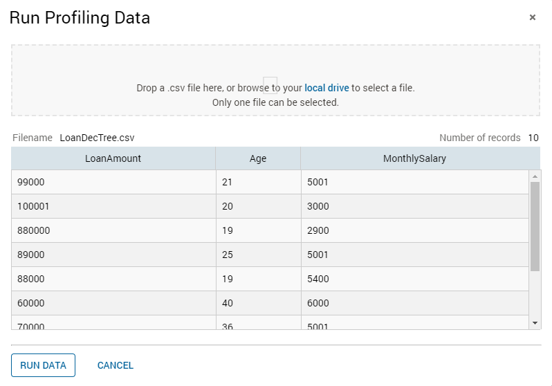
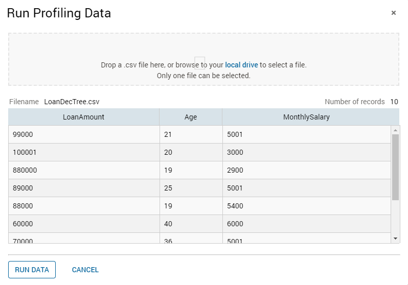

Previewing and Running Data Profiling
To run the product selection tree profiler, attach a .csv dataset to run against the conditions in the product selection tree. Only one dataset can be attached to a product selection tree.
After you upload the .csv file and you have run the profiler, the .csv file is saved in memory as long as the editor remains open. Therefore, if you edit the product selection tree, you can recount the tree using the same .csv file and update the statistics based on changes you make.

 | Note The profiling data is persisted as long as the profiling views editor remains open.
|

Dataset Preview